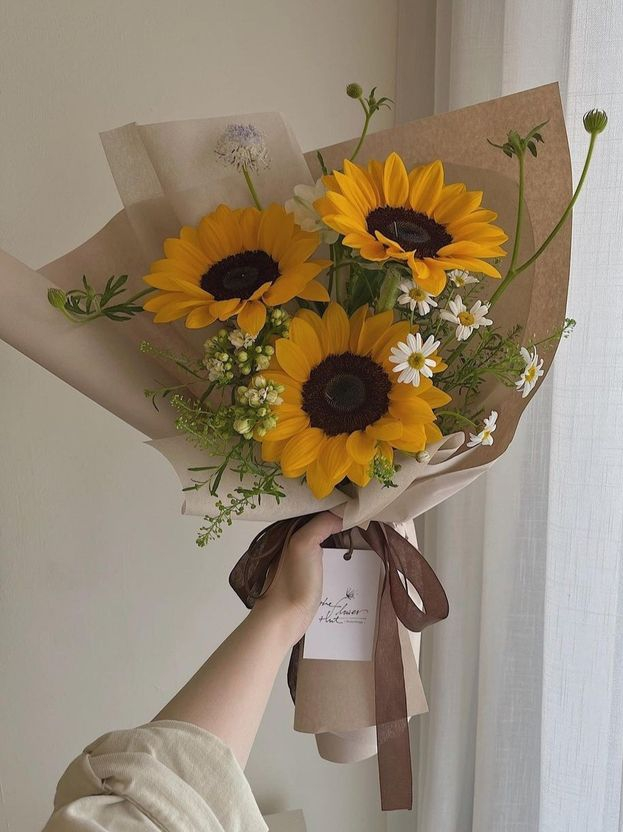

|
Anyelir, atau dikenal dalam bahasa Inggris sebagai carnation, mempunyai nama ilmiah Dianthus caryophyllus adalah tanaman hias pekarangan dan pot yang populer. Tanaman ini berasal dari kawasan Mediterania. Bunga anyelir memiliki warna yang terang dan berwarna-warni, sehingga sering digunakan sebagai hiasan. Anyelir dapat hidup selama 18-20 bulan (termasuk tumbuhan semusim). Tanaman ini dapat mencapai ketinggian sampai 2 meter, namun untuk dapat tumbuh tegak ia harus diikat dengan penyokong. Garis pusat batang tanaman bunga anyelir dapat mencapai 1 cm dan biasanya membengkak pada buku/ruas. Bunga anyelir memiliki beberapa jenis warna seperti, bunga anyelir warna putih, merah, ungu, kuning, merah muda, dan motif garis-garis. |
Kembali ke Etalase |

|
Saffron paling sesuai ditanam di daerah yang memiliki banyak hujan di musim semi namun relatif kering di musim panas. Selain itu, hujan yang turun sebelum musim berbunga bisa menambah panen saffron. Sebaliknya, hujan atau cuaca dingin selama masa berbunga meningkatkan kemungkinan tanaman terserang penyakit dan mengurangi hasil panen. Saffron hasil domestikasi C. sativus adalah tumbuhan tahunan (perenial) yang berbunga di musim gugur. Tanaman ini tidak tumbuh di alam bebas dan merupakan mutan poliploidi yang steril dari Crocus cartwrightianus asal Mediterania timur yang berbunga di musim gugur. Penelitian botani mengungkap C. cartwrightianus berasal dari pulau Kreta, dan bukan dari Asia Tengah seperti yang dulu diperkirakan orang. Saffron merupakan hasil seleksi buatan oleh pembudidaya yang menginginkan tangkai putik (stigma) yang panjang. Bunga kuma-kuma yang berwarna ungu tidak menghasilkan biji karena steril, dan reproduksi tanaman bergantung pada bantuan manusia. Setelah tanaman selesai berbunga, bonggol harus digali dan dipisah-pisahkan untuk musim tanam berikutnya. Bonggolnya juga hanya bertahan semusim dan membelah diri menjadi hingga 10 anak bonggol untuk kemudian tumbuh menjadi tanaman baru. Bonggol berbentuk globular (seperti bawang), berdiameter 4,5 cm, dan diselubungi serat yang saling bersilangan di bagian luar. |
|

|
Bunga matahari adalah tumbuhan semusim dari suku kenikir-kenikiran yang populer, baik sebagai tanaman hias maupun tanaman penghasil minyak. Bunga tumbuhan ini sangat khas: besar, biasanya berwarna kuning terang, dengan kepala bunga yang besar. Tumbuhan ini telah dibudidayakan oleh orang-orang Indian Amerika Utara sejak ribuan tahun lalu. Selanjutnya tersebar ke Amerika Selatan dan menjadi salah satu sumber pangan bagi warga Inka. Setelah penaklukan oleh orang Eropa, bunga Matahari diperkenalkan ke Eropa dan berbagai penjuru dunia lainnya pada abad ke-16. Semenjak abad ke-17 bijinya digunakan dalam campuran roti atau diolah sebagai pengganti kopi serta cokelat. Penggunaannya sebagai sumber minyak mulai dirintis pada abad ke-19. |

|
Bunga gypsophilla, juga dikenal sebagai Baby's Breath, adalah bunga yang cantik dan lembut yang sering digunakan dalam rangkaian bunga dan hiasan dekoratif. Keindahan serta daya tariknya membuatnya menjadi salah satu pilihan populer di dunia taman dan industri bunga. Gypsophilla merupakan salah satu kelompok paling heterogen dan terbesar dalam suku anyelir, Caryophylleae . Genus ini terdiri dari sekitar 150 spesies tanaman herba tahunan atau abadi , tanaman merambat atau pembentuk bantalan, yang terutama menghuni stepa pegunungan di bagian utara Dunia Lama yang beriklim sedang dengan hotspot diversifikasi di wilayah Irano-Turanian.
Setiap bunga kecil memiliki kelopak sepal hijau bermata putih berbentuk cangkir yang berisi lima kelopak dalam nuansa putih atau merah muda. Buahnya berbentuk kapsul bulat atau lonjong dengan bukaan katup. Mengandung beberapa biji berwarna coklat atau hitam yang sering berbentuk seperti ginjal atau cangkang siput. |